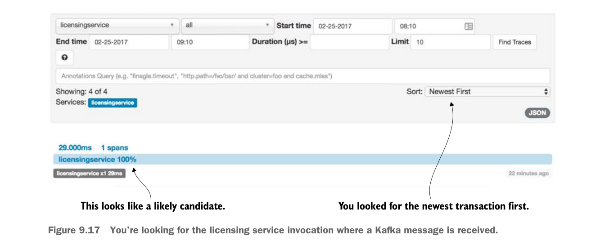

With the trace ID in hand you can query Zipkin for the specific transaction and can see the publication of a delete message to your output message channel. This message channel, output, is used to publish to a Kafka topic called orgChangeTopic. Figure 9.16 shows the output message channel and how it appears in the Zipkin trace.

The time when you deleted the organization using the DELETE call; Spring Cloud Sleuth captured the publication of the message.
Spring Cloud Sleuth will automatically trace the publication and receipt of messages on Spring message channels.
You can see the licensing service receive the message by querying Zipkin and looking for the received message. Unfortunately, Spring Cloud Sleuth doesn’t propagate the trace ID of a published message to the consumer(s) of that message. Instead, it generates a new trace ID. However, you can query Zipkin server for any license service transactions and order them by newest message. Figure 9.17 shows the results of this query.
You looked for the newest transaction first.
This looks like a likely candidate.
You’re looking for the licensing service invocation where a Kafka message is received.